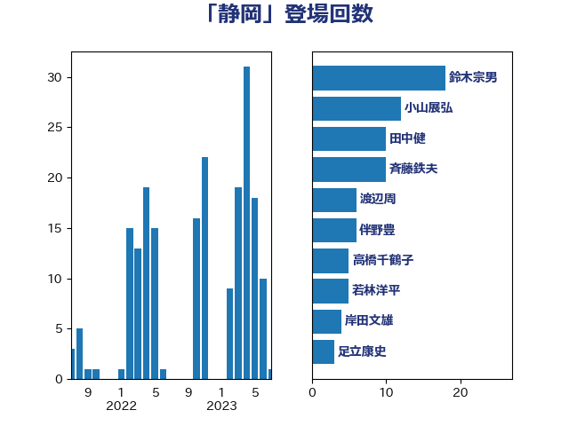

単語「静岡」

| 鈴木宗男 | 日本維新の会 | 18 回 |
| 小山展弘 | 立憲民主党 | 12 回 |
| 田中健 | 国民民主党 | 10 回 |
| 斉藤鉄夫 | 公明党 | 10 回 |
| 渡辺周 | 立憲民主党 | 6 回 |
| 伴野豊 | 立憲民主党 | 6 回 |
| 高橋千鶴子 | 日本共産党 | 5 回 |
| 若林洋平 | 自由民主党 | 5 回 |
| 岸田文雄 | 自由民主党 | 4 回 |
| 足立康史 | 日本維新の会 | 3 回 |
| 牧山ひろえ | 立憲民主党 | 3 回 |
| 片山さつき | 自由民主党 | 3 回 |
| 深澤陽一 | 自由民主党 | 3 回 |
| 永井学 | 自由民主党 | 3 回 |
| 榛葉賀津也 | 国民民主党 | 3 回 |
| 嘉田由紀子 | 無所属 | 3 回 |
| 長浜博行 | 無所属 | 2 回 |
| 野村哲郎 | 自由民主党 | 2 回 |
| 重徳和彦 | 立憲民主党 | 2 回 |
| 足立敏之 | 自由民主党 | 2 回 |
| 谷田川元 | 立憲民主党 | 2 回 |
| 谷公一 | 自由民主党 | 2 回 |
| 西村康稔 | 自由民主党 | 2 回 |
| 米山隆一 | 立憲民主党 | 2 回 |
| 奥下剛光 | 日本維新の会 | 2 回 |
| 天畠大輔 | れいわ新選組 | 2 回 |
| 大口善徳 | 公明党 | 2 回 |
| 吉良よし子 | 日本共産党 | 2 回 |
| 加藤鮎子 | 自由民主党 | 2 回 |
| 仁比聡平 | 日本共産党 | 2 回 |
| 下野六太 | 公明党 | 2 回 |
| 齋藤健 | 自由民主党 | 1 回 |
| 高木真理 | 立憲民主党 | 1 回 |
| 鎌田さゆり | 立憲民主党 | 1 回 |
| 野田国義 | 立憲民主党 | 1 回 |
| 芳賀道也 | 国民民主党 | 1 回 |
| 福島みずほ | 社会民主党 | 1 回 |
| 石井章 | 日本維新の会 | 1 回 |
| 田野瀬太道 | 無所属 | 1 回 |
| 牧野たかお | 自由民主党 | 1 回 |
| 片山大介 | 日本維新の会 | 1 回 |
| 浜口誠 | 国民民主党 | 1 回 |
| 森山浩行 | 立憲民主党 | 1 回 |
| 森屋隆 | 立憲民主党 | 1 回 |
| 梅村みずほ | 日本維新の会 | 1 回 |
| 柚木道義 | 立憲民主党 | 1 回 |
| 林芳正 | 自由民主党 | 1 回 |
| 杉尾秀哉 | 立憲民主党 | 1 回 |
| 本田顕子 | 自由民主党 | 1 回 |
| 本村伸子 | 日本共産党 | 1 回 |
| 木村英子 | れいわ新選組 | 1 回 |
| 朝日健太郎 | 自由民主党 | 1 回 |
| 平山佐知子 | 無所属 | 1 回 |
| 川田龍平 | 立憲民主党 | 1 回 |
| 岸真紀子 | 立憲民主党 | 1 回 |
| 山際大志郎 | 自由民主党 | 1 回 |
| 山谷えり子 | 自由民主党 | 1 回 |
| 山本佐知子 | 自由民主党 | 1 回 |
| 山口壯 | 自由民主党 | 1 回 |
| 宮澤博行 | 自由民主党 | 1 回 |
| 安江伸夫 | 公明党 | 1 回 |
| 大野泰正 | 自由民主党 | 1 回 |
| 大島敦 | 立憲民主党 | 1 回 |
| 塩田博昭 | 公明党 | 1 回 |
| 塩崎彰久 | 自由民主党 | 1 回 |
| 国定勇人 | 自由民主党 | 1 回 |
| 吉田統彦 | 立憲民主党 | 1 回 |
| 古川元久 | 国民民主党 | 1 回 |
| 倉林明子 | 日本共産党 | 1 回 |
| 住吉寛紀 | 日本維新の会 | 1 回 |
| 伊藤岳 | 日本共産党 | 1 回 |
| 中島克仁 | 立憲民主党 | 1 回 |
| おおつき紅葉 | 立憲民主党 | 1 回 |